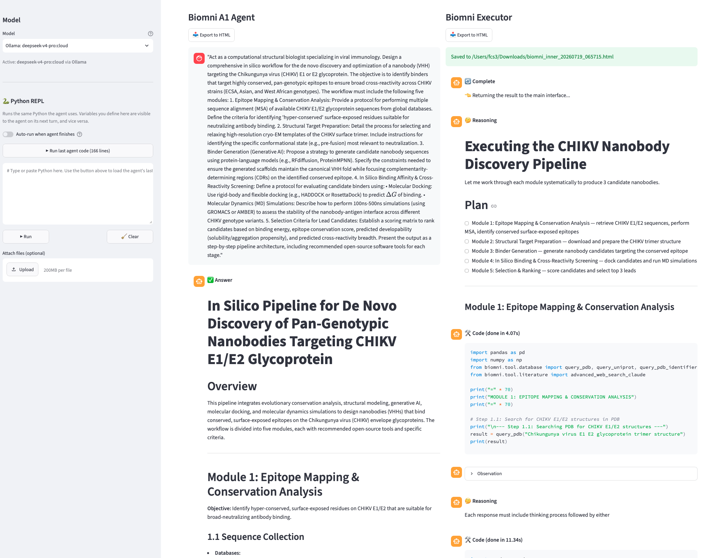

In August 2025, a ten-person hackathon team spent four days manually stitching together ChatGPT, local LLMs, and half a dozen bioinformatics tools to prototype an AI-assisted nanobody design workflow for chikungunya virus — and hit a wall when ChatGPT's Agent Mode refused the query outright. In July 2026, a single Biomentis agent session carried an equivalent pipeline from prompt to three ranked, scored candidate sequences, entirely on its own, with every reasoning step and tool call preserved for inspection.
This site walks through what actually happened — using the unedited outputs from both years — and what it means for research productivity and science education.

The live Biomentis UI: agent answer on the left, full step-by-step executor trace on the right.
Step counts, error counts, and timings are computed directly from the raw Biomentis trace exports; hackathon figures are from the team's own 2025 report. See the full comparison for sourcing.
Why chikungunya and its E1/E2 glycoproteins are a live research target, and where large language models and generative structural tools are actually changing how that research gets done.
Read the field context →Two real Biomentis sessions, unedited: a species-specific LAMP primer design workflow, and a five-module in-silico nanobody discovery pipeline that shipped three scored candidates.
See the case studies →Biomentis has an opt-in tutor layer that converts every agent step into a Bloom's-taxonomy / Webb's-DOK-tagged teaching card, grounded in a student's own course materials, and logs it all for grading.
See the learning tool →One prompt in, a full species-specific molecular diagnostics workflow out.
A single request — design LAMP primers that distinguish Streptococcus pyogenes from every other Streptococcus species — produced a gene-target recommendation, primer design parameters, an in-silico specificity checklist, and a runnable Python primer-fetching script.
Open the case study →A five-module structural biology pipeline, designed and then executed.
Asked to design and then run a pan-genotypic nanobody discovery pipeline against chikungunya virus, the agent returned three ranked candidate sequences with predicted binding energies, cross-reactivity scores, and a wet-lab validation plan.
Open the case study →Task by task, tool by tool — a side-by-side of the manual, multi-tool pipeline the hackathon team proposed and ran, against what a single Biomentis session actually completed.
Open the comparison →